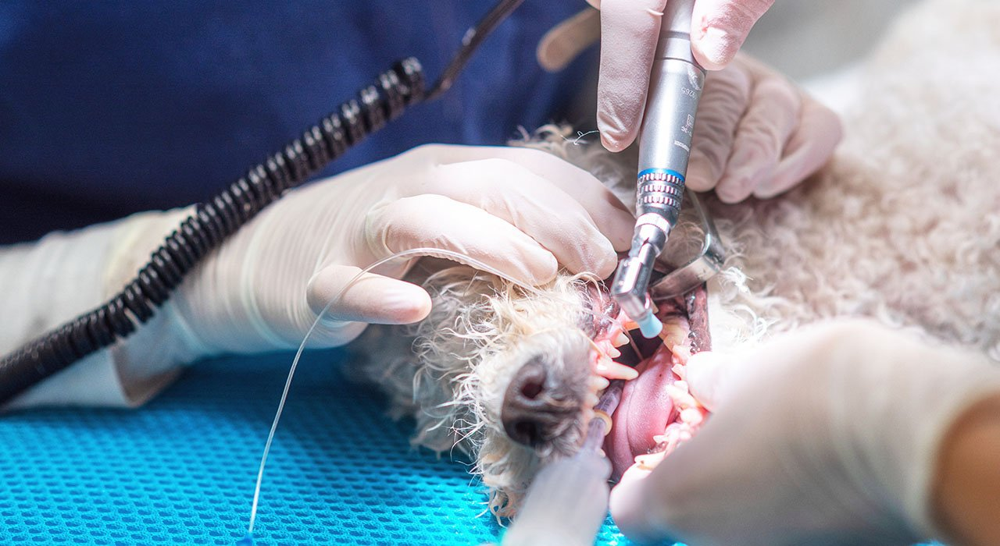
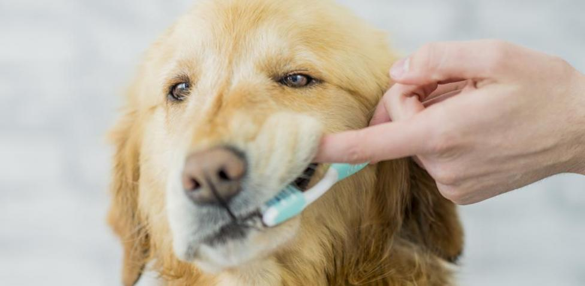

<div class="centrar">
    <div class="Principal">
        <div class="Titulo-icon">
            
            <h1>Otros servicios</h1>
        </div>
        <div class="Contenedor-Text">
            <div class="Imagen">
                
            </div>
            <p>
                En la clínica veterinaria Aquavet, sabemos que la salud bucal es crucial para el bienestar general de su mascota. Nuestro servicio de odontología ofrece una amplia gama de tratamientos para asegurar que su compañero peludo mantenga dientes y encías saludables. Realizamos limpiezas dentales profesionales, extracciones, y tratamientos avanzados para enfermedades periodontales. Con el equipo más moderno y profesionales altamente capacitados, garantizamos una atención de primera calidad. ¡Confíe en nosotros para mantener la sonrisa de su mascota brillante y saludable!
            </p>
        </div>
        <div class="Procedimiento">
            <div class="Imagen-izquierda">
                
            </div>
            <div class="Contenido-derecha">
                <div class="Titulo-Odontologia">
                    <h2>Procedimiento</h2>
                </div>
                <ul>
                    <li>Drenaje de absceso de origen dental</li>
                    <li>Extracción simple de molar</li>
                    <li>Extracción simple de canino</li>
                    <li>Extracción simple de incisivo</li>
                    <li>Biopsia de cavidad oral</li>
                    <li>Escisión de masa en la cavidad oral</li>
                    <li>Cirugía de encía hipertrófica tumoral (épulis)</li>
                    <li>Extracción de papilomas orales</li>
                </ul>
            </div>
        </div>
    </div>
</div>
